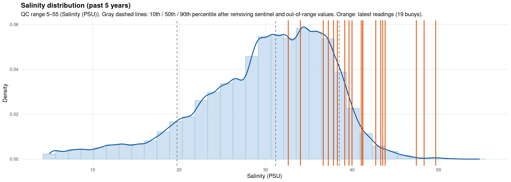
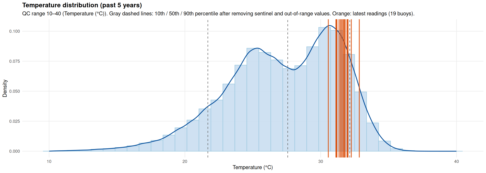

Usual = the 10th–90th percentile of the past 5 years of readings. Data from SECOORA ERDDAP. Report: 2026-08-26 14:12 EDT · Latest data: 2026-08-13 08:06 EDT
Latest network mean: 40.9 PSU on 2026-08-13 (19 buoys). Today’s usual range: 22.1–41.3 PSU (median 36.2). This sits at the 100th percentile of network daily means over the past 5 years (record mean 29.9; range 19.6–40.9).
Latest network mean: 32.1 °C on 2026-08-13 (19 buoys). Today’s usual range: 30.8–32.9 °C (median 32.0). This sits at the 92th percentile of network daily means over the past 5 years (record mean 27.2; range 12.4–34.2).
Distribution plots show the QC-filtered 5-year record (all buoys pooled), with each buoy’s latest reading marked against that history. Interpolated maps show DIVAnd hourly fields on 2026-08-12 for the variable on each page.
Click the Salinity or Temperature tabs in the top right to see the distribution, interpolated maps, and yearly trend for each variable.
Outliers and sentinel values are removed before analysis (salinity 5–55 PSU; temperature 10–40 °C).
r lookback_years
The distribution (left) is the QC-filtered salinity record for all buoys over the past 5 years. The gray dashed lines mark the 10th, 50th, and 90th percentiles of that history. The orange lines mark each buoy’s latest reading: the closer a line sits to either edge of the histogram, the more unusual that buoy’s current salinity is for this time of year.
Below, the interpolated maps show how salinity varies across the bay at four times on 2026-08-12, and Network mean by year compares this year’s daily average (orange) against every prior year (thin black lines) and the climatological median band.
r lookback_years
The distribution (left) is the QC-filtered temperature record for all buoys over the past 5 years. The gray dashed lines mark the 10th, 50th, and 90th percentiles of that history. The orange lines mark each buoy’s latest reading: the closer a line sits to either edge of the histogram, the more unusual that buoy’s current temperature is for this time of year.
Below, the interpolated maps show how temperature varies across the bay at four times on 2026-08-12, and Network mean by year compares this year’s daily average (orange) against every prior year (thin black lines) and the climatological median band.